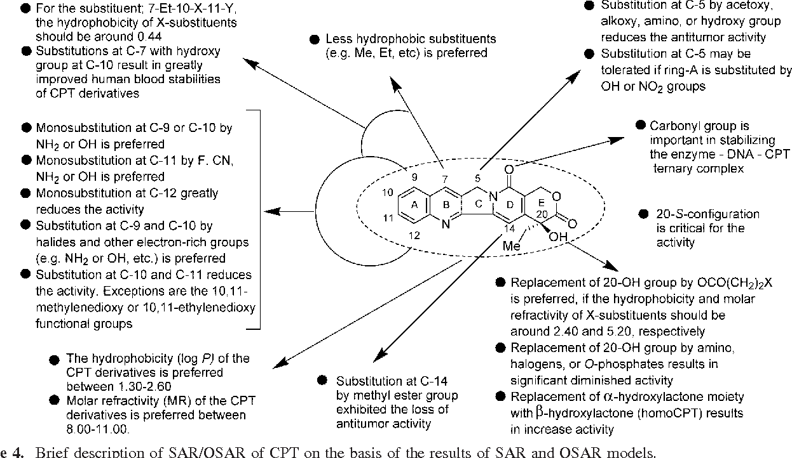
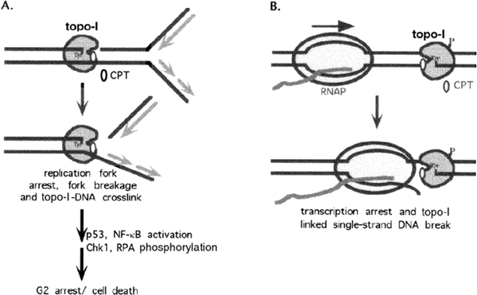

Camptothecin :
Camptothecin (CPT) is a topoisomerase inhibitor. It was discovered in 1966 by M. E. Wall and M.
C. Wani in systematic screening of natural products for anticancer drugs. It was isolated from the bark and stem
of Camptotheca acuminata (Camptotheca, Happy tree), a tree native to China used in traditional Chinese
medicine.[1][2] It has been used clinically more recently in China for the treatment of gastrointestinal
tumors.[3] CPT showed anticancer activity in preliminary clinical trials, especially against breast, ovarian,
colon, lung, and stomach cancers.[
- Origin
Camptotheca acuminata Decne (Nyssaceae)
- Structure-Activity Relationship (SAR)
Studies have shown that substitution at position 7, 9, 10 and 11 can have positive effect on
CPT activity and physical properties, e.g. potency and metabolic stability. Enlargement of the lactone ring
by one CH
2 unit also enhances its abilities, as in homocamptothecin. Substitution at position 12 and 14 leads to
inactive derivative

- Mechanism Of Action
binds to a complex consisting of DNA and topoisomerase I
stabilises the topoisomerase I (TOP1) complex and the ruptured DNA

- Cell Line
human colon HCT116, breast cancer cells (MCF-7), prostate cancer (DU145), leukaemia (CEM)